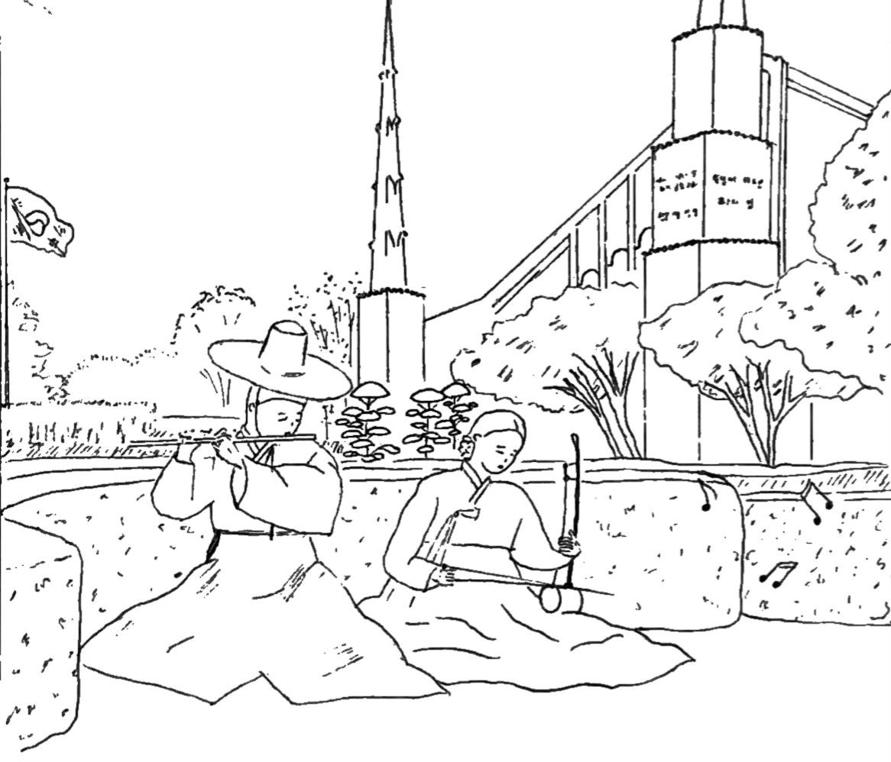

A Joseon couple plays a heart-felt hymn of gratitude on the daegeum (flute) and haegeum (bowed string instrument).
"Let the dead speak forth anthems of eternal praise to the King Immanuel, who hath ordained, before the world was, that which would enable us to redeem them out of their prison; for the prisoners shall go free." D&C 12:22